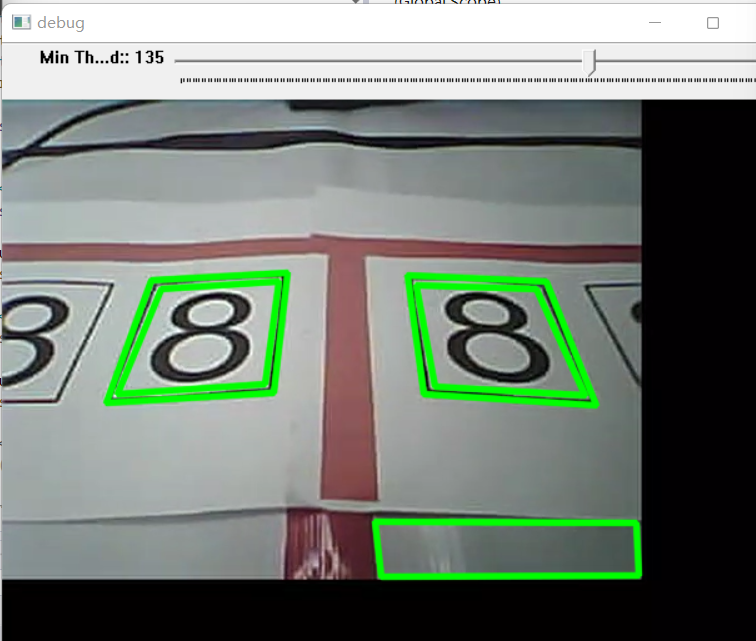
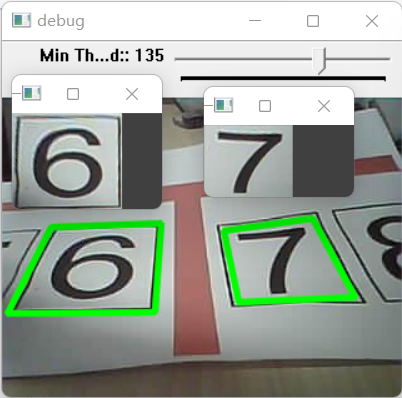
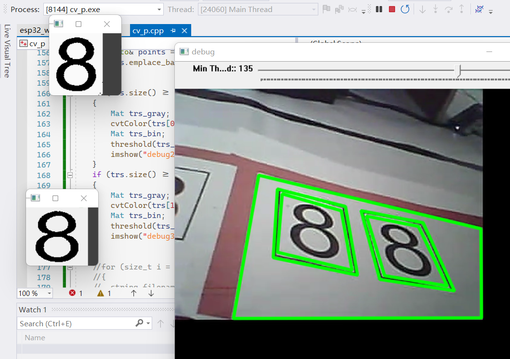
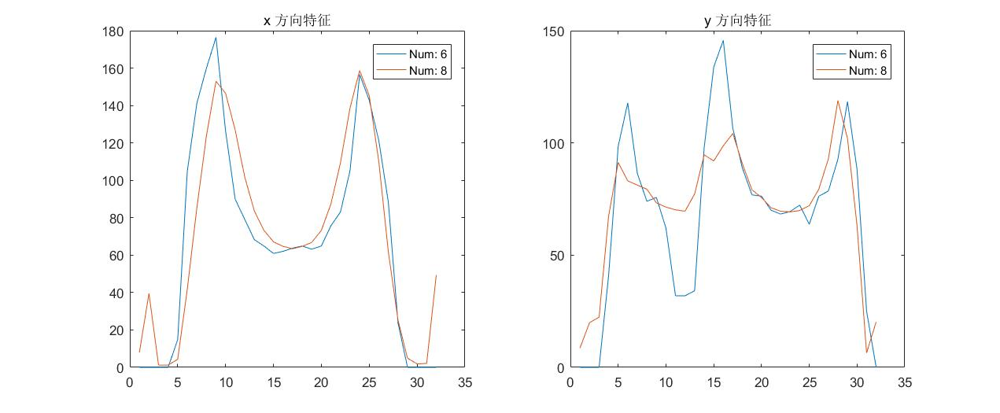

2021电赛F题:送药小车-基于OpenCV和汉明距离识别数字思路
这个题目挺好玩的，不过我并没有参赛，所以只尝试了我感兴趣的识别数字的部分。
需求分析
这个识别需求非常简单，一句话就能说完：识别摄像头拍摄到的数字，数字的样式如图所示，数字可能单独出现，也可能两个一组地出现，画面中最多并排出现两组数字，当有多个数字时，数字的顺序不能乱。

也就是说画面可能会有若干个带框的数字并排出现，我要做的就是识别出它们，而且顺序不能乱。
我注意到很多人立马想到用目标检测的方法来寻找画面中的数字和它的位置。但是我之前查阅过一些资料，目前很火热的目标检测算法 yolo 其实不擅长在画面中寻找文字符号（我想过用 yolo 来做 OCR 来着），所以我并没有和他们一样从目标检测这个方向来考虑。
我以前做过类似的工作 —— 识别图中的多边形（三角形、四边形）并找到它们的位置。而这次要识别的数字刚好也带一个四边形的框，所以我以前做过的工作直接就能用了。
最终我采用的是传统的计算机视觉方案。
OpenCV 识别矩形并纠正透视变形
识别矩形边框
其实更准确的说法是识别画面中的四边形，因为画面是带有畸变（镜头影响）和透视变形（拍摄角度影响）的，所以矩形的边框被摄像头拍下来后就是一个不太整齐的四边形了。
我把我以前做过的多边形识别改成了四边形识别，结果如下图。

可以看到问题还是挺多的。
比如数字的边框识别出了嵌套的两个边框而不是一个边框。这是因为数字边框的内边缘和外边缘被认为是两个四边形了。这个问题我的解决方法是找到所有两两嵌套的边框，然后删除外面那个边框。
还有一个问题就是把没有数字内容的四边形也识别出来了，我的思路是暂时不管它，等到识别数字的阶段，如果没找到数字就舍弃这个边框。
我这里就不贴代码了，因为我也是网上抄的，对其中的原理不是很了解。等我日后研究清楚了另发一篇博客分享。（挖坑）
纠正透视变形
带有透视变形的数字可能不利于 OCR，所以最好是进行纠正。
这个纠正其实很常用，比如现在的手机拍照都有所谓的“文档模式”，它能自动搜索图片中的投影仪画面或者纸张，确定投影仪画面或者纸张的四个顶点，然后把图片裁剪成只有投影仪画面或者只有纸张的图片。
这部分代码也是抄的，就先不贴出来了，纠正后的效果如图所示，效果非常好。

识别数字
识别数字我并没有用什么神经网络，用的还是简单的方法。首先是这个数字是很标准的字体，又不是什么手写字体，杀鸡何须牛刀？其次我这个程序是用 C++ 写的，而平时玩神经网络都是用的 dotnet(ML.NET) 或者 python，C++ 程序调用它们不太方便。
我以前做过类似的识别工作，为了识别教务系统的验证码。那个验证码是很简单的：位置固定、标准字体、没有干扰线，所以我用的是最简单的汉明距离。
这次的数字识别和那个验证码识别非常类似，所以这次我也用的汉明距离。
在计算汉明距离之前，需要对图片进行预处理比如缩放为固定大小、转化为灰度图、二值化处理。预处理中尤其是要进行二值化，这样才方便计算汉明距离。
灰度与二值化预处理
效果如图所示。

提取特征
我之前做验证码识别的时候并没有提取特征。我从 A-Z 0-9 里各挑选一张照片，组成一个 36 张照片的数据库。然后拿新的照片和那 36 张图片算汉明距离，汉明距离最小的就认为是答案。
这次我打算用新的思路，这个思路是我以前看到的，忘了出处是哪里了，当时觉得很有意思所以一直记得。
这个思路就是从图片中提取一定的特征，然后算新图片特征和旧图片特征的汉明距离，这其中的关键是提取特征的算法。
我记到的特征提取算法简单来说就是数有几个像素点：
- 首先横着走，数图片每一列有多少像素点；
- 然后竖着走，数图片每一行有多少像素点；
对于 32x32 的图片，第一步和第二步分别得到 32 个数字，这两组数字称为一张图片的特征。
当时实现的提取特征的代码如下（注意！实现的代码有误！）：
1 | vector<float> calcIdX(const Mat& image_binary) |
我对 1~8 每个数字都挑选了十几个图片，计算了它们的平均特征值。
汉明距离
算汉明距离就是算新的图片的特征值和平均特征值，有多少位置不一样。
虽然我知道是这样的，但是当时迷迷糊糊的状态写的代码求的根本不是汉明距离，真的不知道我当时在想什么。
前面求了 平均特征值，而且求的特征代码写错了，所以下面算的“汉明距离”也就不是“汉明距离了”，而是“相似度”的概念了。
我算“汉明距离”的代码如下：
1 | float distance(const vector<float>& id1, const vector<float>& id2) |
连错两次，代码居然能按照预想的结果来……
实际应用效果
朋友的小车用 esp32-cam 来实时录像并推流。我的程序只需要部署到一台和 esp32-cam 相同局域网的设备上就可以工作。
OpenCV 处理 esp32 推流
这里有个小坑，就是 esp32 的推流不是视频流，而是 jpg 图片流，所以 opencv 无法直接处理。
我用 libcurl 库手动处理了下 esp32 的推流，并让 opencv 解析其中的 jpg 图片。
因为细节还挺多的，所以这部分的代码将在另一篇博文里分享。
影响因素
实际的工作结果还是比较好的，光线条件的影响不是很大，但是受视角的影响比较大。如果画面中数字的边框不完整，那么即使数字在画面中占比很大，我的程序也完全无法工作 —— 识别到矩形框是一切的前提，然后才能识别出数字。
但是 esp32-cam 的画面视角比较窄（朋友给换了个素质更好的镜头），实际测试中，两个数字同时出现在画面中，总有一个数字的边框贴近画面边缘，这就很危险了，说明这个方案稳定性可能不如预期。还好朋友调整了云台，让框尽量完整出现在画面中。
另一个问题就是 6 和 8 分不出来。8 可能会识别成 6，而 6 可能会识别成8，虽然错误率不是很高，但是这个问题说得上很致命了。我朋友的解决方案是对我提交的识别结果进行“滤波”，把出现提交最多的一次作为最终结果。
除了 6 和 8，其他数字的识别率还是比较高的，能有 90%。
再分析
赛后我重点分析了下为什么我的方法分不清 6 和 8。
我怀疑是 6 和 8 的特征值太过相似，所以分不清。
我把它们的特征值做成曲线后，发现它们的特征曲线确实很像。

如果不能对整体思路进行大改，应该可以通过修改求特征的算法来修补。毕竟我的求特征算法搞错了，说不定该对之后就可以工作了（懒得试）。
也可以增加新的特征，比如把 32x32 的图像横竖两刀切割为 4 份，对每一份都求两组特征值，再加上原来的两组特征值。总共 10 组特征值。
虽然运算量大了很多，但是应该应该对提升准确率有帮助（懒得试）。
考虑改用 BP 神经网络
如果能写一个小型的 BP 神经网络，引入几个文件就能用的那种，用来做这种简单的分类任务应该会很好用。这次传统方法好用还是因为字体比较标准，如果是手写字体，我想还是机器学习那一套更好用，应该能节约很多工作量。
2021电赛F题:送药小车-基于OpenCV和汉明距离识别数字思路
https://uint128.com/2021/11/09/2021电赛F题-送药小车-基于OpenCV和汉明距离识别数字思路/